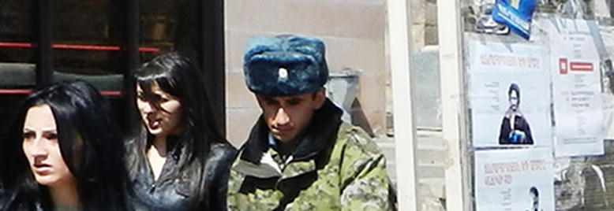

«СТОП». ФЕСТИВАЛЬ ГРУЗИНСКИХ ФИЛЬМОВ В АРМЕНИИ
C 24 марта по 7 апреля 2012 года
в Ереване,
Гюмри, Ванадзоре, приграничных городах
Ноемберян и Чамбарак прошел
«Стоп» фестиваль
грузинских фильмов.
В программу
были включены 2 фильма
– «Прогулка в Карабах» и «Прогулка
в Карабах 2: Зона конфликта».
После просмотров состоялись
обсуждения.
Кавказский Центр Миротворческих Инициатив при поддержке Британского посольства в Армении
Особая благодарность продюсеру фильмов Левану Коринтели
Кавказский Центр Миротворческих Инициатив при поддержке Британского посольства в Армении
Особая благодарность продюсеру фильмов Левану Коринтели
КОМПЛЕКС НЕПОЛНОЦЕННОСТИ ПОД ЛИЧИНОЙ КАВКАЗСКОГО ГОНОРА
Микаел Айрапетян
Они - второсортные армянин и грузин - свой настоящий спор, настоящую мишень борьбы со злом, переводят в плоскость противопоставления друг другу, иногда - враждебности: «Дилиджан» лучше, или «Боржоми»? И множество таких вещей, начиная с умения или неумения готовить долму, и заканчивая соревнованием по проматыванию последних копеек перед паразитами из ресторанного оркестра.
Доклад полностью
ВОЙНА - НАШЕ ВОЗМОЖНОЕ БУДУЩЕЕ
Ануш Булгадарян
Постепенно знакомимся с нравами и внутренней кухней противоположных лагерей. Находясь то там, то тут, в лагерях, где каждая из сторон одинаково обвиняет врага, грузин проявляет свое реальное отношение к азербайджанцу и армянину – без приукрашивания, показывает то впечатление, которое есть у него сегодня, которое было вчера и будет завтра.
Статья полностью
НИКТО НА ЮЖНОМ КАВКАЗЕ НЕ СМОЖЕТ ПОСТРОИТЬ ЗАБОР И ЖИТЬ ОТДЕЛЬНО
Воскан Саргсян
В «Поездке в Карабах-2» преобладает оптимизм и дух миролюбия: снаряды, которые грузины покупают на карабахском фронте у азербайджанской стороны, не подходят по диаметру к стволу огнемета. Погрязший в неимоверных долгах наркоман Гоглико уговаривает своего друга Гио оставить фронт и позаботиться о своем ребенке, которого скоро родит проститутка.
Статья полностью
ИЗБАВЛЕНИЕ ОТ «МИМИНО». ФИЛЬМ НЕ ПРО АЗЕРБАЙДЖАНЦЕВ И КАРТОННЫХ АРМЯН
Репортаж epress.am
Контакт грузин с азербайджанскими военными получается более человеческий, несмотря на побои в первый день пленения. Армяне постоянно обращаются к новоиспеченного молчаливого товарища по темнице, называют его «брат», пьют тосты за предков, за христианский Кавказ, упрекают его родину за гражданскую войну, за то, «что грузины стреляют в грузин».
Статья полностью